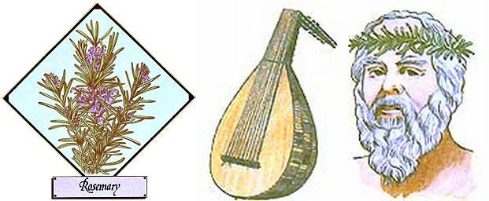

Lately, more and more people have begun to understand just how limited-in both variety and nutritional value-our "modern" diets have become. This realization has sparked a new and widespread interest in the culinary and therapeutic uses of herbs ...those plants which-although not well-known-today-were, just one short generation ago, honored "guests" on the dinner tables and in the medicine chests of our grandparents' homes. In this regular feature, MOTHER will examine the availability, cultivation, and benefits of our "forgotten" vegetable foods and rem edies ...and-we hope-help prevent the loss of still another bit of ancestral lore.
Rosemary (literally "dew of the sea") is a woody shrub with narrow, rather stiff evergreen leaves that are dark green on top, grayish green underneath, and deeply scented. The common species, Rosmarinus ofcinalis, has small blue flowers that bloom along the upper stems of the plant in springtime. (There are, however, many upright and prostrate varieties, some of which have white or pink flowers.)
The fragrance of rosemary is warm, deep, and rather strong ...bringing to mind culinary delights, healing elixirs, exquisite perfumes, and the sun-drenched Mediterranean sea cliffs where it grows naturally. In fact, rosemary is a most evocative and useful herb, which has been cherished for centuries. It has been used in religious ceremonies as a symbol of fidelity, friendship, and remembrance ...planted in the garden to ward off cabbage moths, bean beetles, and carrot flies ...added to stews, salad dressings, lamb, and chicken for piquant flavor ...and shredded with coltsfoot to produce a substitute for tobacco.
Many legends surround this remarkable plant. One such tale has it that, during the flight into Egypt, the Virgin Mary washed her blue cloak and hung it on a rosemary bush to dry ...whereupon the shrub changed its white flowers to blue in her honor. The aromatic perennial is also supposed to flourish in households where the woman is dominant ...and not to grow at all in the gardens of the wicked!
To raise rosemary in your plot, you'll need full sun or semishade ...a welldrained, slightly alkaline sandy loam ...and a regular watering program (the herb greatly appreciates daily misting). And although some varieties can survive temperatures as low as 15° for short periods, rosemary can't tolerate heavy frost, so the plants should be taken indoors during the winter months in most areas of North America.
Propagation is by seed, cuttings, or layering. Seeds, though, are available only for the ofcinalis species, take about three weeks to germinate, and sometimes won't sprout at all ...so cuttings or layering are the preferred plant-starting methods.
To take a cutting, snip a six-inch tip of new growth from a side stem of a well -established plant in June or July (after flowering time) ...making certain the removed section contains a "heel" of old wood. Bury the lower four inches of the cutting in sand or vermiculite ...keep its environment humid (some people invert a water glass over the little twig) ...and don't be impatient: The tiny plants won't be ready for transplanting until autumn.
If you'd prefer to try layering, simply put one or two of an established plant's mature lower branches under the soil (leave the tips of these fronds poking up through the earth) and weight the buried sections to keep them there until they form roots. Then cut off the newly grounded portions and set your baby plants out on their own.
Here are some good sources of plants: [1] Sandy Mush Herb Nursery, Dept. TMEN, Route 2, Surrett Cove Road, Leicester, North Carolina 28748 (catalog $1.00, refundable), [2] WellSweep Herb Farm, Dept. TMEN, 317 Mt. Bethel Road, Port Murray, New Jersey 07865 (catalog $1.00, refundable), [3] Sunnybrook Farms Nursery, Dept. TMEN, 9448 Mayfield Road, Chesterland, Ohio 44026 (catalog 50 cents), and [4] Nichols Garden Nursery, Dept. TMEN, 1190 North Pacific Highway, Albany, Oregon 97321 (free catalog).
Most nurseries prefer to ship rosemary plants in the spring ...but even if you have to wait a few months to give "dew of the sea" a place in your home or garden, you'll find that the versatile herb will well reward your patience.
|
 [Left] Renaisance Lutes were made from rosemary wood.[Right] Greek scholars wore rosemary wreaths to strengthen their memories. |
|
|